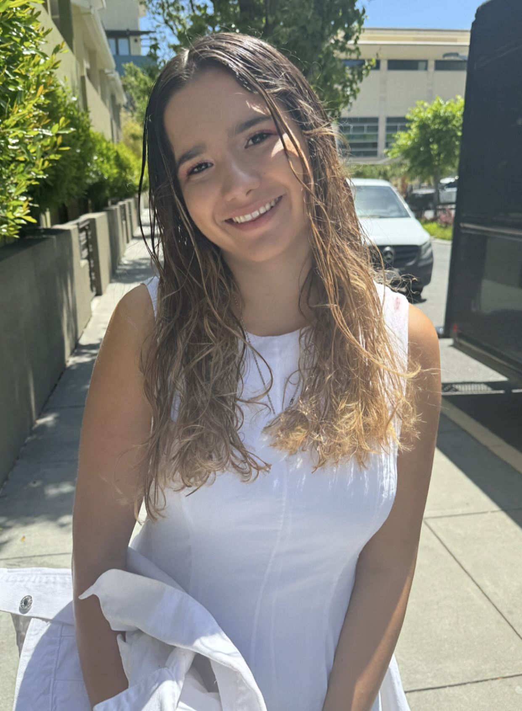
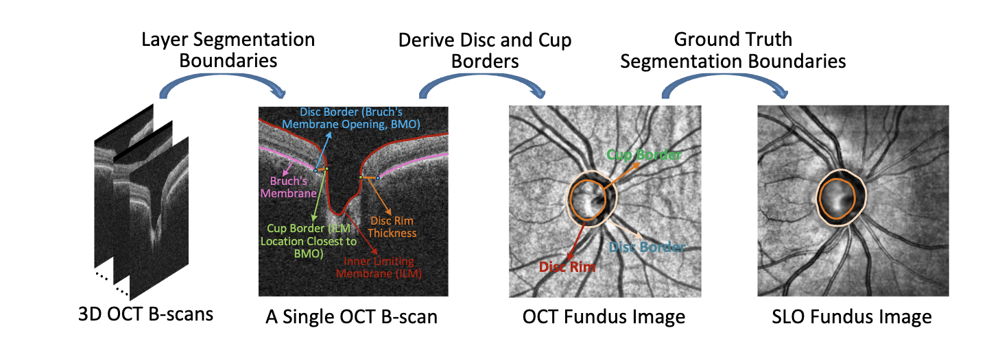
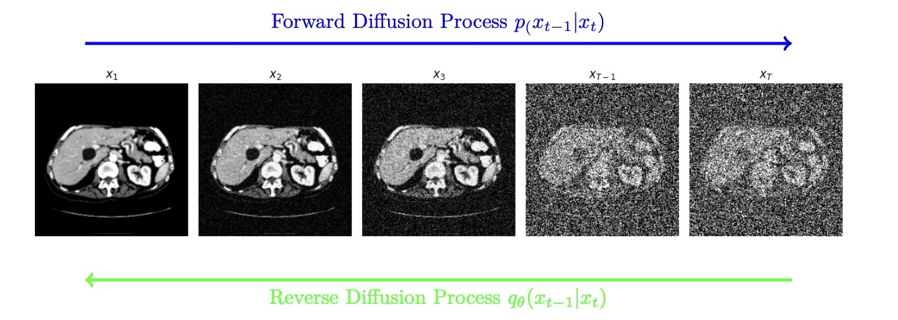
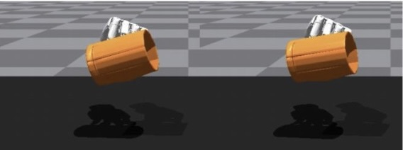
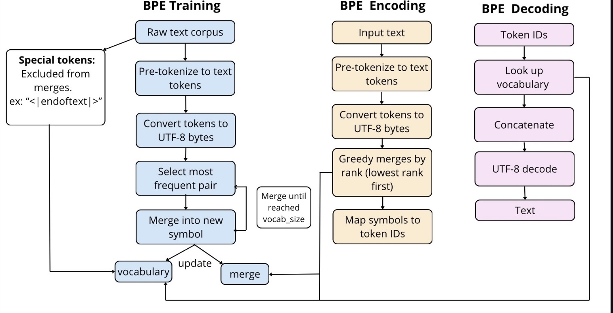

Ava Kouhana
MS Student — Stanford ICME · Computational & Mathematical Engineering
I am completing my ICME master's at Stanford, graduating in June 2026. At Stanford, I research Reinforcement Learning and World Models in Professor Gordon Wetzstein's lab. Prior to Stanford, I spent six months at Harvard with Dr. Mengyu Wang on image segmentation and vision-language models for medical imaging fairness, and another six months with Dr. Craig Levin applying latent diffusion models to PET image reconstruction.
 Email
Email
 GitHub
GitHub
Publications


Projects

Residual RL with Uncertainty for Dexterous Manipulation
Analyzed interaction between imitation learning and residual RL, showing that increased data can degrade performance.

Language Model Components from Scratch (MiniLM, Transformer, BPE)
Implemented Transformer architecture, byte pair encoding, and a minimal language model from scratch in PyTorch.
Grants & Awards
- Recipient of 2024 IEEE Nuclear Science, Medical Imaging Trainee Grant (NSS MIC)
- 2nd place Outstanding Poster at the 20th Anniversary of ICME Stanford Research Symposium